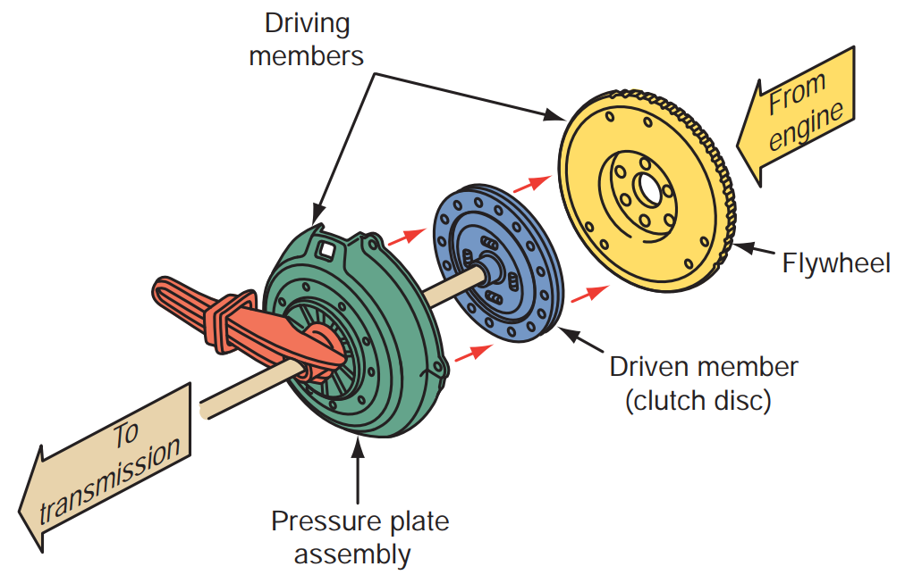
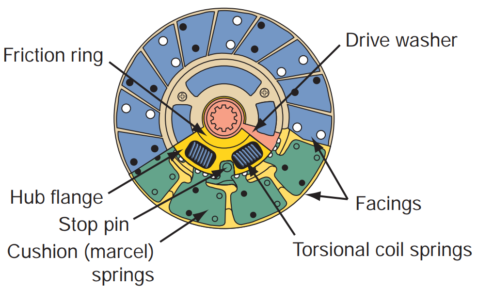
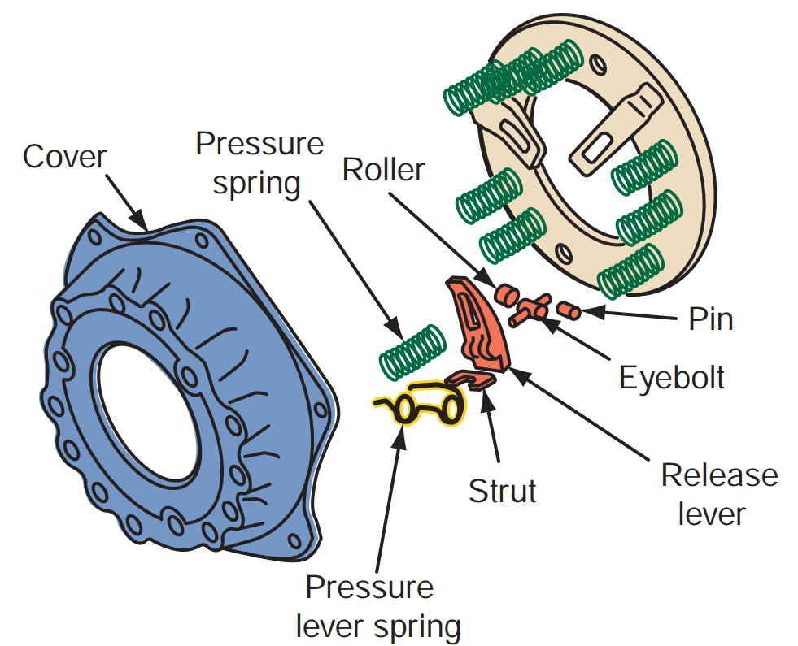

The clutch is located between the transmission and engine where it provides a mechanical coupling between the engine’s flywheel and the transmission’s input shaft. The driver operates the clutch through a linkage that extends from the passenger compartment to the bell housing (also called the clutch housing) between the engine and the transmission.
All manual transmissions require a clutch to engage or disengage the transmission. If the vehicle had no clutch and the engine was always connected to the transmission, the engine would stop every time the vehicle was brought to a stop. The clutch allows the engine to idle while the vehicle is stopped. It also allows for easy shifting between gears. (Of course, all of this applies to manual transaxles as well.)
OPERATION

Figure 6.2. When the clutch is engaged, the driven member is squeezed between the two driving members.
The basic principle of clutch operation is shown in Figure 6.2. The pressure plate and flywheel are the drive or input members of the assembly. The clutch disc, also called the friction disc, is the driven or output member and is connected to the transmission’s input shaft. As long as the clutch is disengaged (clutch pedal depressed), the drive members turn independently of the driven member, and the engine is disconnected from the transmission.
However, when the clutch is engaged (clutch pedal released), the pressure plate moves toward the flywheel and the clutch disc is squeezed between the two revolving drive members and forced to turn at the same speed.
COMPONENT
Flywheel
The flywheel, an important part of the engine, is also the main driving member of the clutch. It is normally made of gray cast iron, which has a high graphite content to lubricate the engagement of the clutch. Welded to or pressed onto the outside diameter of the flywheel is the starter ring gear. The large diameter of the flywheel allows for an excellent gear ratio of the starter drive to ring gear, which provides for ample engine rotation during starting. The rear surface of the flywheel is a friction surface machined very flat to ensure smooth clutch engagement. The flywheel also provides some absorption of torsional vibration of the crankshaft. It further provides the inertia to rotate the crankshaft through the four strokes.
Clutch Disc

Figure 6.3. The major parts of a clutch disc
The clutch disc is splined to the transmission’s input shaft and receives the driving motion from the flywheel and pressure plate assembly and transmits that motion to the transmission input shaft.
The parts of a clutch disc are shown in Figure 6.3. There are two types of friction facings. Molded friction facings are preferred because they withstand greater pressure plate loading force without damage.
Pressure Plate Assembly
The purpose of the pressure plate assembly is twofold. First, it must squeeze the clutch disc onto the flywheel with sufficient force to transmit engine torque efficiently. Second, it must move away from the clutch disc so the clutch disc can stop rotating, even though the flywheel and pressure plate continue to rotate.
Spring
Basically, there are two types of pressure plate assemblies: those with coil springs and those with a diaphragm spring. Both types have a stamped steel cover that bolts to the flywheel and acts as a housing to hold the parts together. In both, there is also the pressure plate, which is a heavy, flat ring made of nodular or gray cast iron. The assemblies differ in the manner in which they move the pressure plate toward and away from the clutch disc.

Figure 6.4. Parts of a coil spring pressure plate.
A coil spring pressure plate assembly, shown in Figure 6.4, uses coil springs and release levers to move the pressure plate back and forth. The springs exert pressure to hold the pressure plate tightly against the clutch disc and flywheel. This forces the clutch disc against the flywheel. The release levers release the holding force of the springs. There are usually three of them. Each one has two pivot points. One of these pivot points attaches the lever to a pedestal cast into the pressure plate and the other to a release lever yoke/keybolt bolted to the cover. The levers pivot on the pedestals and release lever yokes to move the pressure plate through its engagement and disengagement operations.
The diaphragm spring pressure plate assembly relies on a cone-shaped diaphragm spring between the pressure plate and the pressure plate cover to move the pressure plate back and forth. The diaphragm spring (sometimes called a Belleville spring) is a single, thin sheet of metal that works in the same manner as the bottom of an oil can. The metal yields when pressure is applied to it. When the pressure is removed, the metal springs back to its original shape. The center portion of the diaphragm spring is slit into numerous fingers that act as release levers.